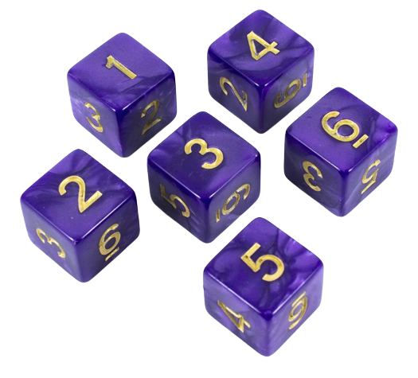
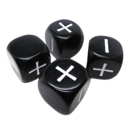

Son los más comunes y tradicionales, pero estos también son muy variados dependiendo de lo que muestran en sus caras. Tienen forma cúbica y para los juegos de rol no es suficiente utilizar este dado, ya que necesitas tirar a menudo dados de forma poliédrica.
Cuando pensamos en un dado, nos viene a la cabeza un pequeño objeto cúbico que cuando se deja caer sobre una superficie plana, muestra una de sus posibles caras. Un dado tradicional tiene seis caras, y en cada una de sus caras, números del 1 al 6. Lanzarlo implica que el azar mostrará un número entero del uno al seis, y que las probabilidades de que cada uno de esos números salga son las mismas, debido a la forma geométrica, siempre y cuando el dado sea perfecto.
Sin embargo, la perfección es difícil de obtener, y el desgaste a menudo se hace notar en los dados. Ese es uno de los muchos motivos por los que en Roll the Dice ponemos a tu disposición el infalible y totalmente aleatorio dado virtual.
Con nuestros dados virtuales podrás ser tú quien tome el control total de los dados, ya sea para escoger el dado más adecuado para cada ocasión y juego, o para crear el dado personalizado que te permita realizar la tirada adaptada a tus necesidades.
Por ejemplo, si necesitas un dado d6 de 6 caras para tu última batalla de rol con tus amigos, estás en el lugar indicado para conseguir una tirada limpia y que os permita horas de diversión sin necesidad de preocuparos por los dados.
Como ya sabrás, hay multitud de juegos de mesa, juegos de rol y videojuegos que usan dados para aportar aleatoriedad y emoción a la experiencia de juego. De ese modo, la suerte forma parte importante del juego, y el azar se convierte en un compañero más con el que a veces salimos ganando y otras… pues no tanto. Pero lo importante es tener el dado adecuado para cada ocasión.
Existe una variante menos usada del dado de 6 caras llamado "dado fudge" el cual tiene 3 resultados posibles: Positivo, neutro y negativo.
Iván Casado Álvarez